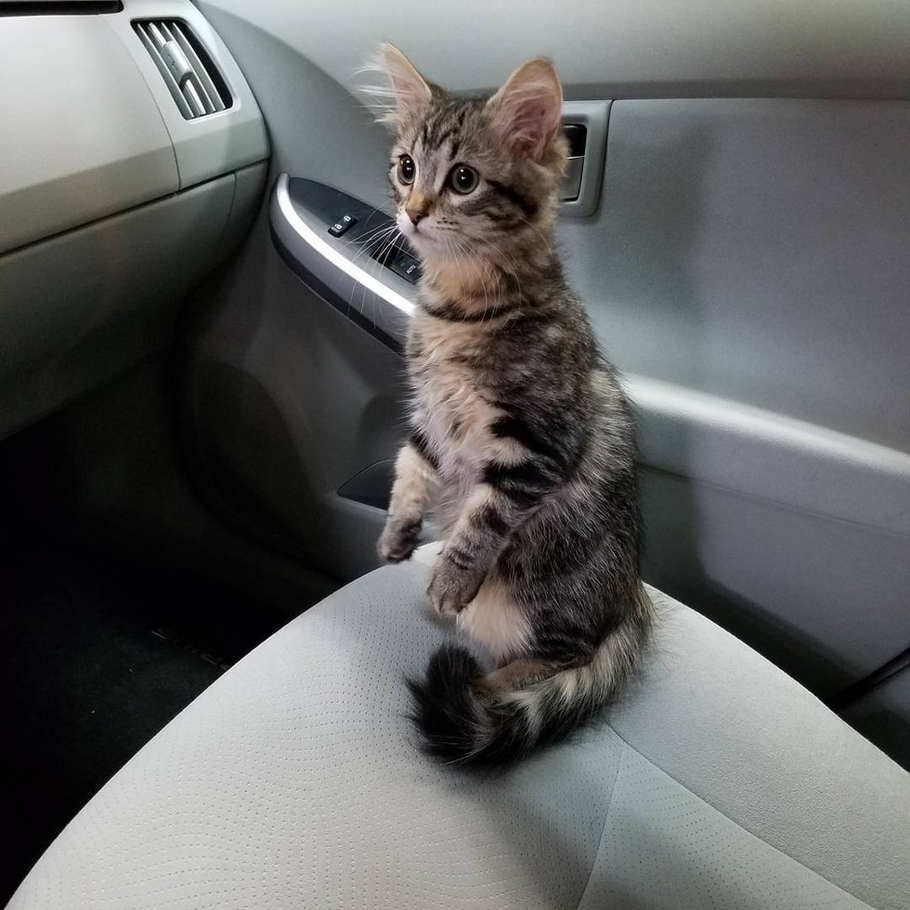
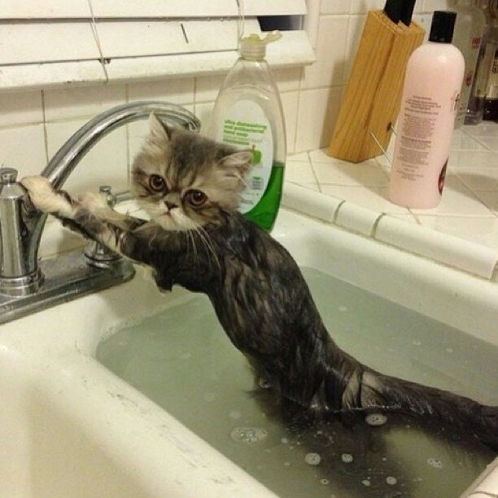
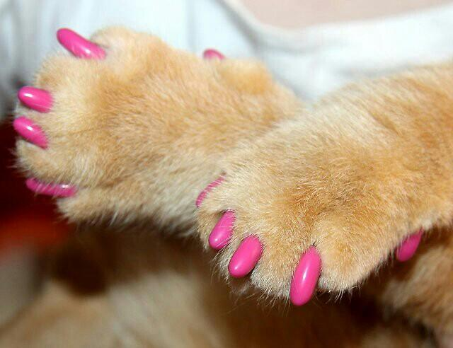
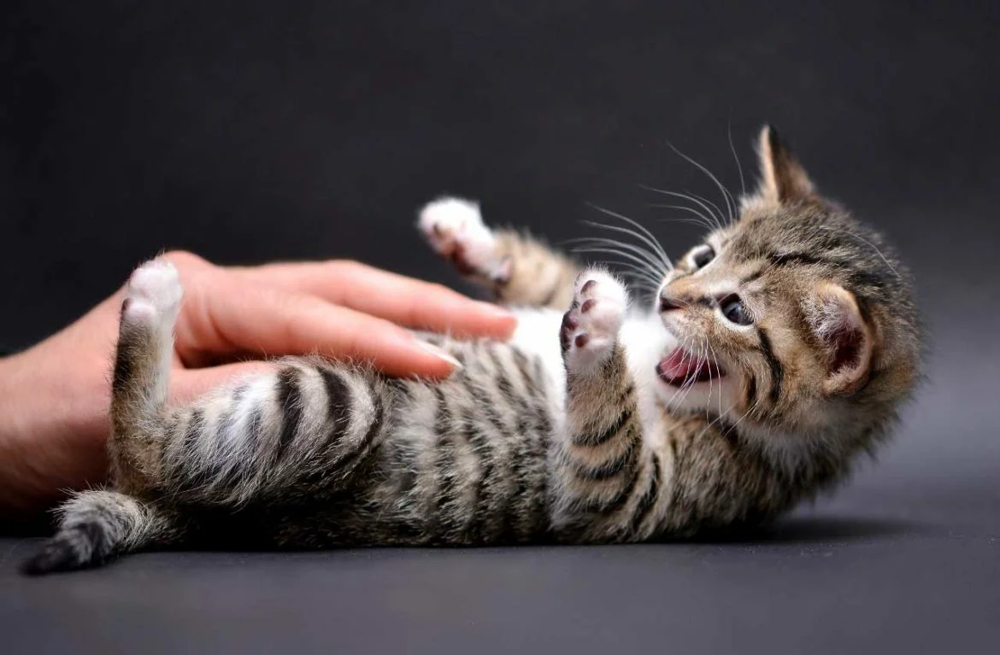
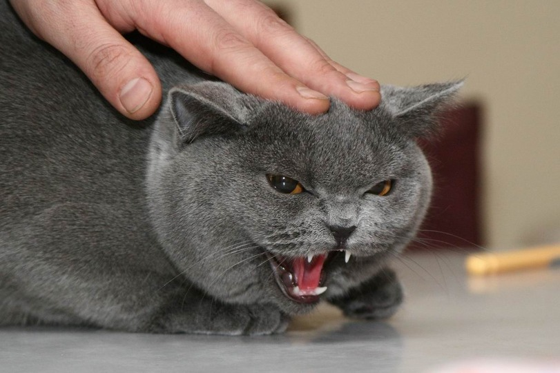

Мы коты!
Мяу... Мир глазами кошек
Что мы ненавидим?
Поездки в транспорте
Для кошек очень важны привычки. Им нравится их территория и ежедневные ритуалы, и они не выносят перемен. Машина или любой другой транспорт нарушают их размеренную рутину. А если это неизвестное и нежеланное еще и движется! Многие кошки страдают от укачивания, а ещё их может тошнить на нервной почве от переживаний...
Купание
Редкая кошка любит принимать ванну. Большинство кошек просто ненавидит, когда шерсть намокает, и готово пойти на что угодно, лишь бы избежать экзекуции. Промокшая шёрстка теряет свои теплозащитные свойства, и кошки мёрзнут, поэтому процесс купания для большинства из них неприятен. Да и пугает неизвестностью, ведь мало кого купают с самого детства и постоянно (это совершенно не нужно). Кошки прекрасно справляются с уходом за своей шерстью сами, так что купание им обычно не требуется.
Стрижка когтей
та гигиеническая процедура не вызывает радости ни у одной кошачьей души. Но некоторые относятся к ней более нейтрально, других же приходится фиксировать в специальных сумках или прибегать к помощи нескольких помощников и грумера.
Чтобы сделать процесс максимально терпимым, следует приобрести качественные когтерезы и научиться правильно стричь когти, не задевая сосудики и нервные окончания. Обычные маникюрные щипчики для этой цели не подходят.
Прикосновения к животу
Если собаки обычно очень любят, когда им чешут пузо, то кошки, напротив, этого не выносят. И даже ласковая кошка часто вцепляется в руку любимого хозяина, если он дотрагивается до её живота.
Хотя за секунду до этого казалось, что кошка сама с удовольствием подставила живот. На самом же деле когда кошка показывает хозяину живот, выворачиваясь и потягиваясь, это означает: я тебе полностью доверяю и показываю своё самое уязвимое место. Но это отнюдь не является приглашением это место трогать и гладить!
Древние инстинкты хищника у кошек совсем не изменились до наших дней, и попытки дотронуться до живота вызывают у кошки инстинктивную защитную реакцию.
Агрессивное тисканье
Если вы, не в силах сдержать свой восторг, начнёте тискать, тормошить и подбрасывать кошку, то с вероятностью в 99% получите впившиеся в руки зубы и когти.
Кошки не выносят грубого отношения и не понимают, что оно вызвано вашим восторгом. Они скорее воспринимают такое агрессивное поведение как нападение, и оно вызывает рефлекторную защитную реакцию.